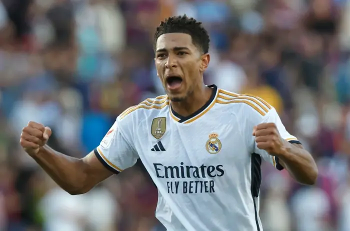
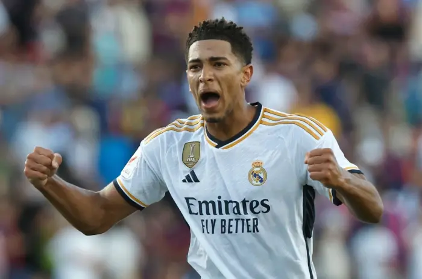

Jude Bellingham
Early Life & Youth Career
Jude Bellingham was born in Stourbridge, England, and grew up in a football-loving family. His father, Mark Bellingham, was a prolific non-league goal scorer in England, which influenced Jude’s passion for the game.
He began playing football at a young age and joined Birmingham City’s youth academy when he was just 8 years old. He quickly developed into a promising midfielder, showing excellent vision, dribbling, and maturity beyond his years.
Birmingham City (2019–2020)
Bellingham made history when he became Birmingham City’s youngest-ever first-team player at just 16 years and 38 days old in August 2019. He impressed in the English Championship, making 44 appearances in his debut season, scoring 4 goals and providing 2 assists.
Due to his performances, several top European clubs became interested in signing him, including Manchester United, but he ultimately chose Borussia Dortmund for his development.
Borussia Dortmund (2020–2023)
In July 2020, Borussia Dortmund signed Bellingham for £25 million, making him the most expensive 17-year-old in football history at the time.
Key Achievements at Dortmund:
Youngest goalscorer in club history (17 years, 77 days).
Became a regular starter in midfield despite his young age.
Helped Dortmund win the DFB-Pokal (2020–21).
Was named Bundesliga’s Best Midfielder (2022–23).
Captaincy: At just 19 years old, he captained Dortmund in some matches.
During his time in Germany, Bellingham was widely regarded as one of the best young midfielders in the world, earning praise for his leadership, dribbling, tackling, and goal-scoring ability.
Real Madrid (2023–Present)
In June 2023, Real Madrid signed Bellingham for €103 million, making him one of the most expensive English players in history. He was given the iconic number 5 jersey, previously worn by club legend Zinedine Zidane.
Key Achievements at Real Madrid (so far):
Had a record-breaking start to his Real Madrid career, scoring multiple match-winning goals.
Became the top scorer in La Liga early in the 2023–24 season.
Scored a brace in El Clásico against Barcelona, helping Madrid win 2-1.
Won La Liga and was a key player in Madrid’s midfield dominance.
England National Team
Bellingham has been a crucial player for the England national team since making his debut in 2020 at the age of 17, becoming England’s third-youngest debutant ever.
International Achievements:
Played in UEFA Euro 2020, helping England reach the final.
Starred in the 2022 FIFA World Cup, scoring his first World Cup goal against Iran.
Became a leader in England’s midfield, playing alongside stars like Declan Rice and Phil Foden.
Playing Style & Strengths
Bellingham is a complete midfielder, known for his:
✅ Versatility – Can play as a defensive, box-to-box, or attacking midfielder.
✅ Dribbling & Ball Control – Excellent at progressing the ball forward.
✅ Tactical Intelligence – Reads the game exceptionally well.
✅ Work Rate & Leadership – Plays with passion and fights for every ball.
✅ Goal Scoring Ability – Scores important goals from midfield.
Awards & Achievements:
🆠DFB-Pokal Winner (2020–21) – Borussia Dortmund
🆠Bundesliga Player of the Season (2022–23)
🆠Golden Boy Award (2023)
🆠La Liga Winner (2023–24) – Real Madrid
🆠Multiple Player of the Month & Team of the Year Selections
Fun Facts:
Turned down Manchester United to join Borussia Dortmund.
Speaks German fluently after playing in the Bundesliga.
Idolized Wayne Rooney while growing up.
Wears number 5 at Madrid as a tribute to Zidane.
 
